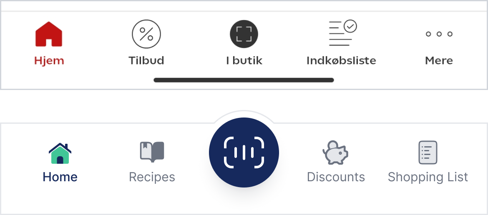
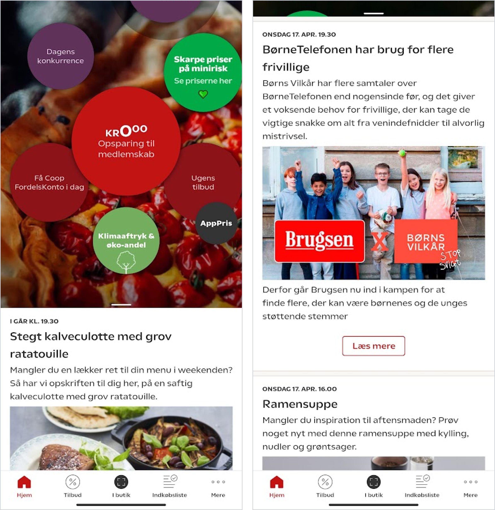
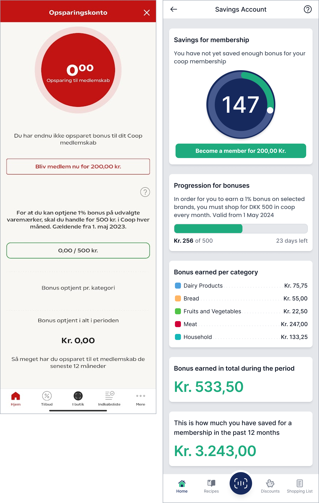
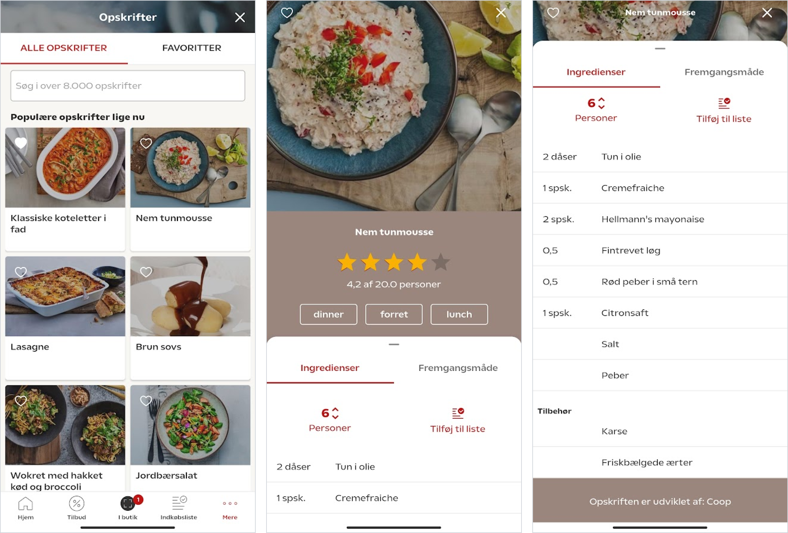
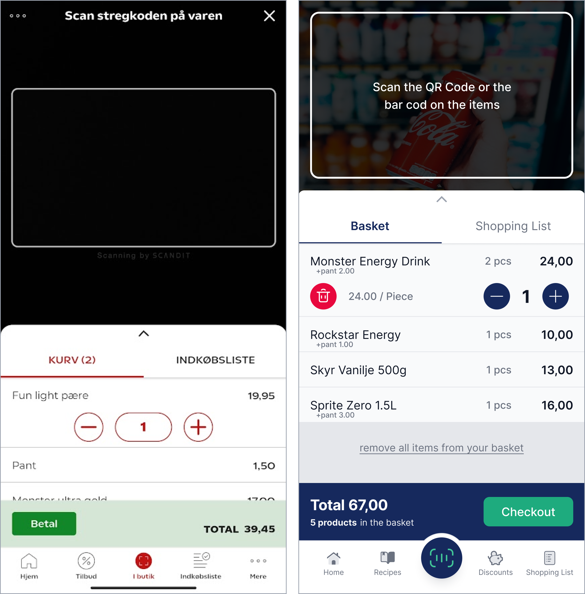
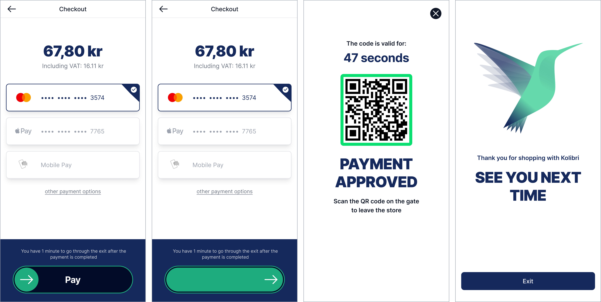
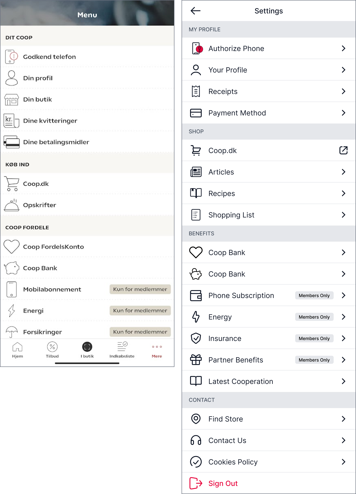
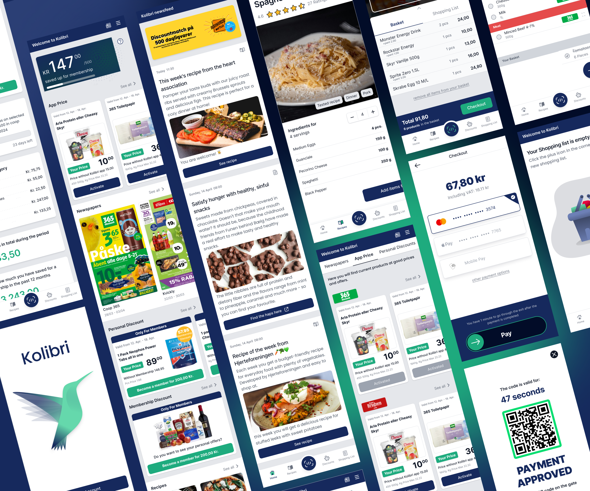

Kolibri Shopping
App Design
Role UX/UI Designer
Context Application Design
Period 2024 April
Introduction
Kolibri is a redeThe application focuses on creating a user-friendly shopping experience within COOP-affiliated stores such as Coop365, Superbrugsen, Irma etc. moreover to provide deals and discounts for recurring users. It offers deals and discounts for recurring users, informs them about news and new recipes to incentivize shopping, and enables users to create shopping lists for a more convenient experience.
This case study centres on the redesign of the Coop application, proposing a refurbished design system that appears more modern yet remains neutral enough for easy scalability and future development. The focus is on the main pages accessible to free users, omitting pages that require membership. It is worth noting that due to a lack of contact with the development team, I'm not aware of the existing app's software limitations. This project was conducted in my own free time.
The Problem
The home screen has not had a large visual makeover since the launch 6 years ago. All that was done is to add further complexity to support the requests from the retailers. What should the future home screen look like to give a modern and scalable Look & Feel for each of our retail clients, while showing the relevant information and make customers ready to start a shopping trip when they enter the store?
Requirements
The commercial requirement is to increase the flexibility for each of our retail clients, so each home screen does not have to look alike.The dashboard “blobs” don’t need to be in the centre of attention and the feed could be grouped into different categories. The Bonus increases every time you shop and we would still like to see the incremental amount when you open the app after a successful shopping experience.
Userbase
The audience spans from young teens and up to 70 year old people shopping in supermarkets.There are different services to support each audience.
Wireframes

High Fidelity Design
Navigation Bar
"The old Navigation bar features 5 buttons: 'Home,' 'Discounts,' 'Scan,' 'Shopping list,' and 'More' respectively. While brainstorming and reconsidering the design, I came to the conclusion that relocating the 'More' button would create room for other, more useful feature buttons such as recipes."
As the main focus of the application is the 'scan and go' feature in the shop, the new design highlights the scanning button prominently on the navigation bar. This button is larger for easier access and more visibility. The other main features of the application, such as 'recipes,' 'discounts,' and 'shopping list,' are also emphasized. Previously, recipes were not accessible through a button; they were only featured on the home page in one of the blobs. In the new design, recipes have a dedicated button on the bottom navigation bar, alongside the 'discounts' and 'shopping list' buttons."
The “More” button has been moved to a newly created top navigation bar and has been replaced with a hamburger menu icon. This top navigation bar also features a welcome message on the left side, and a “Newspaper” icon next to the “hamburger menu” icon, taking the user to a newly created newsfeed page. You can read more about this page later in the study.
Home Page
The old home page layout features several blobs in the middle of the screen. While the blobs are visually appealing and potentially more engaging, they could be considered to have a higher cognitive load due to the variety of font sizes and less traditional layout, which may slightly hinder the immediate finding of information. It is also important to mention that occasionally, additional blobs may push the existing ones halfway out of the screen which creates a cluttered appearance and affects the overall user experience.
The central and prominent button shows the amount of money acquired for the membership. “Ugends tilbud” and “Appris” buttons only take the user to the discounts page, duplicating the functionality already available, thus making them unnecessary clutter on the interface. Additionally, the other half of the screen is occupied by the latest blog posts, creating confusion regarding the user's focus. Maximizing the blog post section could help clarify the user's navigation experience."

In the redesigned version the main function of the home page is to let the user quickly access information about their savings, discover the latest discounts, see the latest newspaper articles of various shops, and explore the latest recipes, all without navigating to a different page. The approach is to display deals with clear pricing and savings information that can make decision-making easier for the user. Savings are prominently highlighted, clearly indicating to the user the amount they can save by using the app, thereby serving as a strong incentive for purchasing a membership.
The focus remains on the amount saved up for the membership, emphasising the importance of showing users their progress towards membership benefits. In this version the user also receives additional information about how much more is needed for their membership, moreover an extra button that by clicking provides more information about the membership and the benefits, to convey a clearer message.

- App Price: Users can view the latest discounts available through the application in this section, along with the duration of each discount and the actual savings they can enjoy by using the app.
- Newspapers: Users can view the latest discounts available through the application in this section, along with the duration of each discount and the actual savings they can enjoy by using the app.
- Personal Discounts: this section highlights the benefits of being a paying member of the application, showcasing the amount that can be saved by becoming a member. A CTA button provides quick access for easy sign-up.
- Membership Discount: Similar to the personal discounts, the "Membership Discount" row displays potential savings for members. However, users only receive information about these discounts if they are already members. Therefore, a CTA button for becoming a member is included on the card.
- Recipes: In the "Recipes" section, users can view the two latest recipes published. However, the cards on the home page are designed to be more concise compared to those on the actual recipes page layout, reducing clutter.
- Climate Footprint: The final section on the home page is dedicated to the climate footprint and ecoshare page. Here, users can read news and articles about the environment, as well as view their climate footprint if they consent to Coop analysing their their spending habits.
Newsfeed
The newsfeed is a newly introduced page that wasn't available in the original application. Its purpose is to streamline the home page layout by displaying only relevant discounts and new recipes at first glance for the user. The page is accessed by clicking the “Newspaper Icon” on the top navigation bar. In order to inform the users that a new recipe/article has been posted, a red notification badge appears on the top right of the icon. To show that the user has clicked on the icon and is on the newsfeed, the Navigation menu’s text changes; moreover the icon is highlighted by a white colour.

The first section of the newsfeed highlights the ongoing campaigns, which may include prizes that users can win or raffles they can participate in.
The newsfeed is organised into content cards, each offering a different recipe or suggestion. This card-based layout allows for easy scrolling and content consumption. They kept the same layout and they have been updated a bit to match the Kolibri design system. Small enhancements have been implemented on the cards for improved usability.
A new feature is an icon placed in the top right corner of each card, indicating whether the post is a recipe or an article. Additionally the old design’s buttons were sometimes taking the user outside of the app into their browser to read the article, without being clear of the action. Now, icons added to these buttons provide clear indication of the action, ensuring users are informed before navigating away from the app.

Savings Account
The savings account page was kept similar to its original version. This page is accessible by clicking the first main card on the Kolibri homepage that indicates the amount saved up for the membership. Upon opening this page, the navigation bar changes from the original blue one, to show a different icon instead of the hamburger menu. By clicking this “question mark” icon the user can read more about how the savings and the membership account actually works.
The main changes on the page include the addition of a circular progress bar and the "Progression for bonuses" section. These updates effectively communicate the user's progress and the remaining goals, which is excellent for user motivation. The app incentivizes users to become members and save money by showing potential earnings and savings over time, which can encourage continued use of the app.
On the progression card, the app now indicates the remaining time the user has to earn the 1% discount for the given period.
The “Bonuses Earned” categories have also been sectioned and the font sizes of the amount of money saved have also been increased for a clearer experience.
Recipes
The old design of the recipes page features two tabs, where the user can see all the recipes or the recipes that they favourite. It also has a search box and cards featuring the image and name of the dish, users can also mark dishes as favourites using a heart icon, adding them into the favourites section.
On the actual recipe page, there's a starring system allowing users to rate recipes from 0 to 5 stars. To enhance user experience, this feature has been integrated into the cards on the recipe page. Now, users can see the rating of each dish before clicking on it, providing valuable insight into its popularity.
The cards on the recipe page could also display the number of ingredients required for each dish. Additionally, a convenient quick action button could be included on the cards, allowing users to quickly add the necessary ingredients to their shopping basket with just one click.
When opening the recipe page, the navigation bar transitions from the default one to a customized version featuring "back," "share," and "like" buttons. The addition of the sharing option encourages user engagement by enabling them to easily share recipes, potentially attracting more users to the app.
The page prominently displays the name of the dish, the recipe rating, and an image accompanied by relevant tags for better categorization.
The serving counter has been relocated beneath the image and positioned between "-" and "+" buttons for simpler adjustment.
Directly below the ingredients section, a button allows users to add all the ingredients to their shopping list. As users scroll further down, they can read the directions of the recipe, making it easier to follow along. To ensure proper readability and easy access, the button to add all ingredients to the shopping list remains on the screen in a minimized version.

Discounts
The discounts page maintains its original layout while incorporating updated cards. A carousel is positioned just below the navigation bar, allowing users to scroll through their favorite shops and explore the latest discounts and newspapers.
The updated discount cards prominently feature the secondary color, primarily in a CTA format, enabling users to immediately sign up for a membership. In the previous design, the "Become a member" button was occasionally hidden from view, potentially going unnoticed by users.
Upon clicking the "See all" button, the page dynamically changes. Instead of the top carousel displaying store icons, users can scroll through all available Newspapers, App Prices, Personal Discounts, and more.

Activating an “App Price” card opens up the active discounts tab at the bottom of the screen, where the user can see all the activated discounts. Unlike the old version where the cards disappeared after activation, in the redesigned version, the card remains visible, however the button transitions to a greyish colour to indicate its inactive state.

Scanning
The first page of the scanning tab remains largely similar to the original design. However, a small enhancement has been made to improve usability by enlarging the rounded buttons, transforming them into bigger tiles. This adjustment enhances readability and clickability, ensuring a smoother user experience.

The primary issue with the scanner page is its lack of clarity. Even after purchasing just two items, the basket items are already pushed off the screen, making it difficult for users to see and understand how many products are in the basket. With each new input, users must maximise the screen to view the contents of the basket.
The updated scanner page features a slightly smaller scanner screen, allowing more space for the basket and shopping list tabs. This enlarged area accommodates bigger fonts and buttons, enhancing accessibility and providing a clearer interface.
Upon successfully scanning an item, the white bracket of the scanner turns green, accompanied by a checkmark to indicate the successful scan. After the interaction the item will be visible in the basket.
The basket item row has been enlarged and the quantity counter has been moved to the right side for easier accessibility. In this state the application also shows the individual item price.
Additionally, a delete button has been incorporated to allow users to easily remove an item from their basket. Unlike the previous version where users could only remove multiple items at once by clicking the minus button multiple times, this new feature provides more flexibility.
For easier removal a gesture control is added, where the user can slide the item to the left side for deletion. After this action a modal pops up to ensure that no items are deleted by accidental swipes. A text button is also added under the basket items, for instances where the user might want to remove all basket items at once. even if multiple of the same had been added before.
Furthermore, a text button has been added below the basket items for instances where users may want to remove all basket items at once, even if multiple of the same item had been added previously.
When purchasing items such as bottled drinks with a deposit fee, the deposit price is now indicated right under the item name for clarity.

Just like in the previous version the user can easily switch between the basket tab and the shopping list tab. Further details regarding the shopping list update are available for review later in the study, providing a more explanation.
After proceeding to the checkout page, the user can see the total amount they have to pay for the products, moreover they can set up different payment methods in advance and choose which one to use for their payment. Sliding the Payment arrow prompts the user to the “Payment Approved” screen displaying the QR code with which the user can leave the store. The final page of this flow includes the logo and a gratitude message aimed at increasing customer loyalty.
Shopping List
The shopping list page greets users with an image of a shopping basket and accompanying text that explains the purpose of the page and provides guidance on how to add items to their grocery list. Pressing the plus icon opens up the "Add Item" page, where users can see a list of the most frequently added items.
Pressing an item in the row, such as "egg," triggers a modal to appear where users can refine and modify the item's details on their list. This includes the ability to change the name, category, and quantity of the item. In the original version, this modal only appeared after an item had already been added to the list and the user wished to modify it. For users who prefer to quickly add items to their list without a modal popping up, a plus icon at the end of the row provides that option.

The previously added items are categorised into segments on the page, such as "fruits," "dairy products," "meat," etc. Each item row displays the added item, its quantity next to a checkbox, and the exact shop where the product is purchasable. However, this feature is only available when the user adds the item from a newspaper. (This feature already exists in the original application, but it has not been addressed in this project.)
Functionality-wise, gestured options for "Delete" and "Checked" have been added. Users can access these options by dragging a selected row either to the left or the right side, respectively. Additionally, at the end of each row, a four-dotted indicator allows users to drag and drop items on the list for easier rearrangement, enhancing the user experience. After a user checks out an item from the list, a previously hidden section called "Your Basket" appears. Here, users can easily view the items already added to the basket, which are checked and crossed out.
The gesture and arrangement controls are visible in the design however as the software limitations are unknown during the creation of this project, the possibility of the implementation of these options are not certain.

Settings
the Settings page update includes refreshed colors, and arrows have been added at the end of the buttons. These arrows indicate whether clicking the button will keep the user within the application or take them to their browser.
Final product
The case study presents a comprehensive redesign of the Coop application, aimed at enhancing user experience and modernising the interface while addressing the specific requirements and challenges outlined in the problem statement.
The redesign focuses on several key areas, including the home page, newsfeed, savings account, recipes, discounts, scanning, shopping list, and settings. Each section undergoes careful consideration and refinement to optimise usability, clarity, and functionality.
The solution involves reorganising the layout to prioritise relevant information such as savings, discounts, recipes, and news. Additionally, the addition of dedicated buttons for key features like recipes and discounts enhances accessibility and usability.
You can view all of the high-fidelity screens here.
Learnings
- Iterative design thrives on user feedback. While this project relied primarily on my own assessments, a broader range of user input would lead to a less biased and more refined interface.
- Redesigning an entire application requires careful consideration of various components, including navigation, layout, functionality, and visual design, to ensure a user-friendly experience.
- Allocating more time to the project would undoubtedly lead to superior outcomes. Developing a fully functional prototype would allow for extensive user engagement, enabling valuable feedback on the usability, functionality, and overall user experience of the redesigned interface.
Conclusion
Overall, the redesign successfully addresses the challenges outlined in the problem statement by improving usability, clarity, and functionality across key areas of the application. By modernising the interface and optimising user experience, the redesigned Coop application is better equipped to meet the needs of its diverse user base and provide a seamless shopping experience.